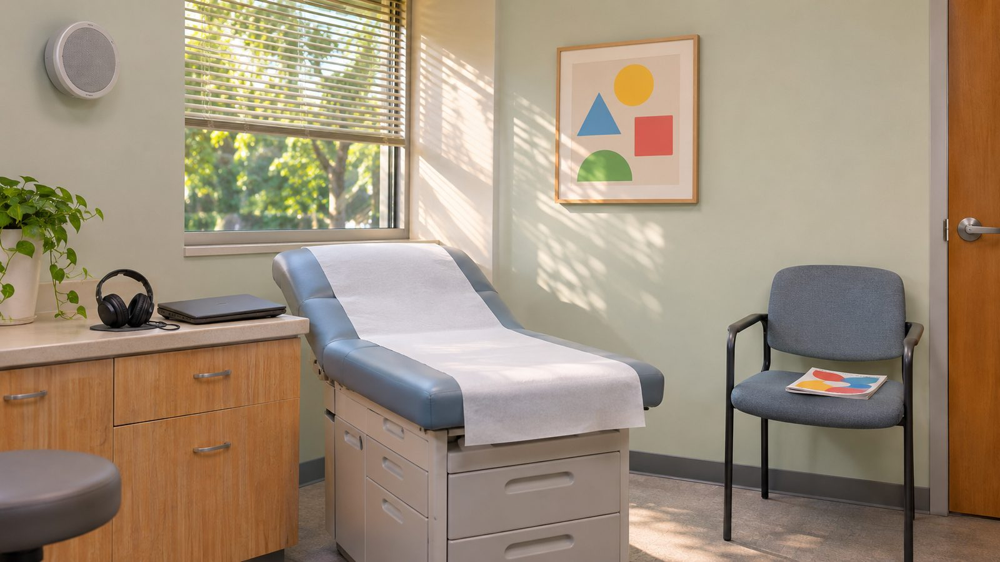

Room 2: The Exam Room

Where You Are
The nurse calls your name and walks you back to Exam Room 2. The paper crinkles under you as you climb up onto the table. Your mom settles into the chair by the door with a magazine, in no hurry at all, which only makes you more impatient to get this over with and get to your friend's house.
The doctor's clipboard flips to a form you have not seen before. This year's checkup includes a hearing screening, and the specialist who runs it is only in the building for a short session today before she drives to her next clinic. If the screening does not finish in her window, it does not get squeezed in later, it gets rescheduled for an entirely different day, an actual second trip back here on a future weekend. Press the button below when you are ready to begin. The moment you do, the clock starts and a short sequence of tones plays through the room speaker after a brief pause, so get comfortable and get ready to listen.
Complete the Hearing Screening
Practice focused auditory attention. Count every tone in the sequence, nothing else matters until it ends. You can replay the sequence as many times as you need, but each replay uses time from the same clock, so it pays to listen closely the first time instead of leaning on repeats.
Sound effects cover timer warnings and feedback on your answer, not the hearing screening tones themselves, so turning them off will not affect the test. Turn them off here before starting if you prefer silence otherwise.
Explore the room if you like. When you are ready, press the button below to begin your hearing screening and start the three minute clock.
3:00Your hearing screening will begin when you press Start above.